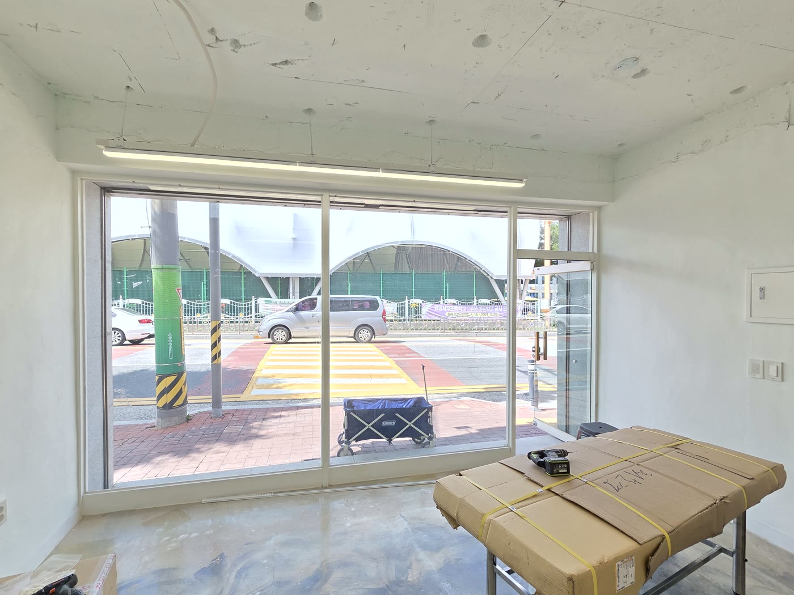
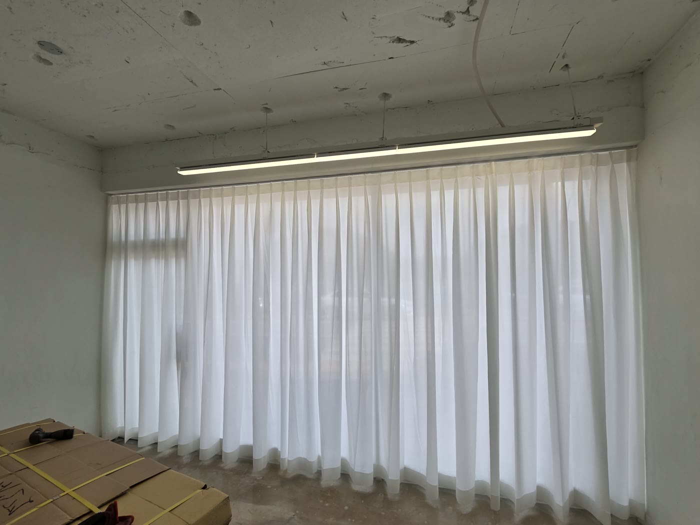
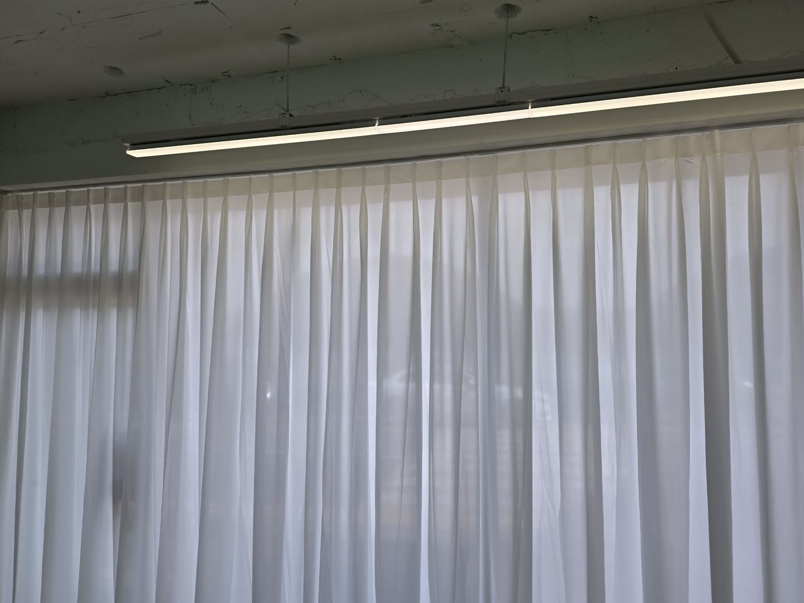
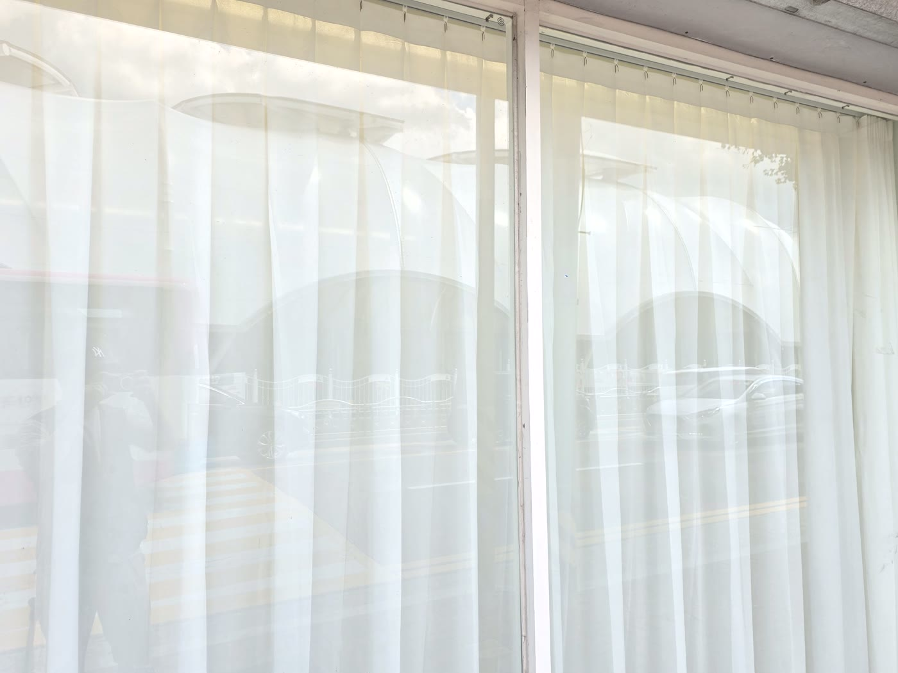

2026년 6월 8일 시공
안동 서동문로 에스테틱 매장
헤비쉬폰 커튼 시공후기

안동 서동문로의 에스테틱 매장에 다녀왔습니다.
전면이 큰 통창인 1층 상가였습니다.
가서 보니 창 바로 앞으로 도로와 인도가 붙어 있어, 지나다니는 사람들 시선이 매장 안까지 그대로 들어오고 있었습니다.
시술과 관리가 이루어지는 공간이라 이대로는 손님이 편히 계시기 어려운 상태였습니다.

에스테틱은 프라이버시가 먼저입니다
에스테틱 매장에서 가장 중요한 건 손님이 시선 걱정 없이 편히 쉴 수 있는 환경입니다.
그런데 이 매장은 도로·인도와 바로 면한 전면 통창이라, 안에서 무엇을 하는지가 밖에서 다 보였습니다.
그렇다고 빛을 완전히 막아버리면 매장이 어둡고 답답해집니다.
채광은 살리면서 시선만 부드럽게 가리는 것, 그리고 매장 특유의 차분한 분위기를 내는 것이 이번 시공의 핵심이었습니다.
빛은 들이고 시선은 가리는 헤비쉬폰
이 조건에 맞춰 헤비쉬폰 원단을 권해 드렸습니다.
헤비쉬폰은 일반 쉬폰보다 도톰하고 밀도가 있는 원단입니다.
얇은 쉬폰은 비침이 심해 시선 차단이 약한데, 헤비쉬폰은 빛은 은은하게 투과시키면서도 바깥에서 안이 또렷하게 보이지 않게 한 겹 걸러 줍니다.
채광과 가림의 균형이 좋아, 통창이 큰 1층 상가에 특히 잘 맞는 원단입니다.

두배 나비주름이 시선 차단을 한 겹 더합니다
여기에 두배 나비주름을 잡았습니다.
두배 주름은 원단을 창 폭의 두 배 분량으로 넉넉히 써서 주름을 풍성하게 잡는 방식입니다.
주름이 깊고 입체적으로 떨어져 같은 원단이라도 훨씬 고급스러워 보이고, 주름이 겹치는 만큼 시선 차단 효과도 한층 높아집니다.
에스테틱처럼 분위기가 중요한 매장에서는 이 풍성한 주름감이 공간의 완성도를 크게 끌어올립니다.

전면 대형창은 주름 간격이 관건입니다
전면 통창이라 커튼 폭과 길이가 상당했습니다.
두배 주름은 원단 사용량이 많은 만큼 주름 간격을 일정하게 잡는 것이 관건입니다.
간격이 흐트러지면 풍성함이 아니라 지저분함이 되기 때문입니다.
창 전체에 걸쳐 주름결이 고르게 떨어지도록 잡아, 매장이 한결 아늑하고 고급스럽게 마무리됐습니다.

관리 팁
쉬폰 커튼은 평소 가볍게 먼지를 털어 주시면 됩니다.
세탁이 필요할 때는 중성세제로 약하게 손세탁하거나 드라이를 권합니다.
강하게 비틀어 짜면 주름이 흐트러질 수 있으니, 물기만 가볍게 빼서 걸어 말리시면 형태가 오래 유지됩니다.
시선은 가리면서 채광과 분위기는 살리고 싶으셨던 현장이라, 헤비쉬폰 두배 나비주름이 잘 맞았습니다.
안동을 포함한 대구·경북 전 지역, 상가·사무실·아파트 커튼 시공이 고민되시면 편하게 문의 주세요.